实际时域0–6.440s；完整抓后窗口：NOT_EVALUATED。原始失败保留；显示不是新物理尝试。
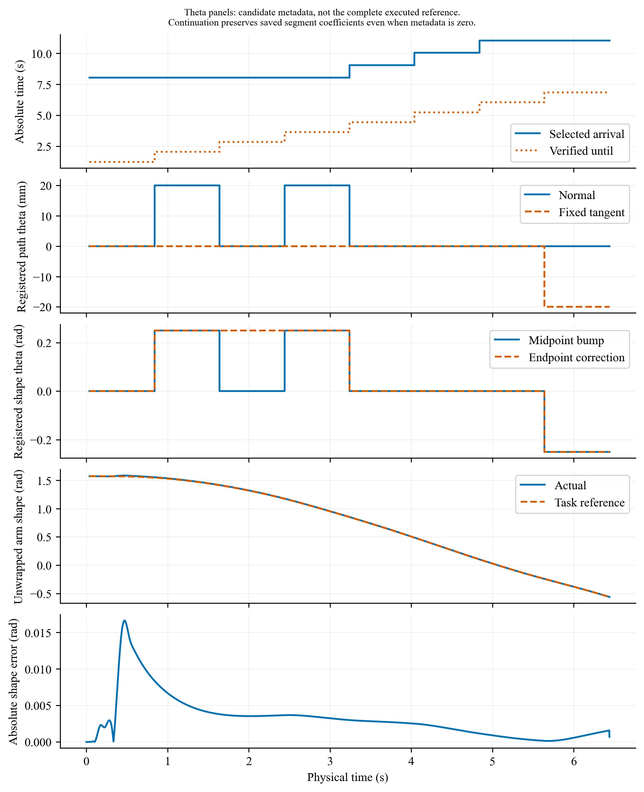
记录的到达时间、有效期及候选 theta 元数据；实际臂形与跟踪误差单列。幅度面板不是完整执行参考：index 0 继续旧段时以保存的 segment 系数为准，登记零值不表示实际偏移或臂形参考瞬间归零。
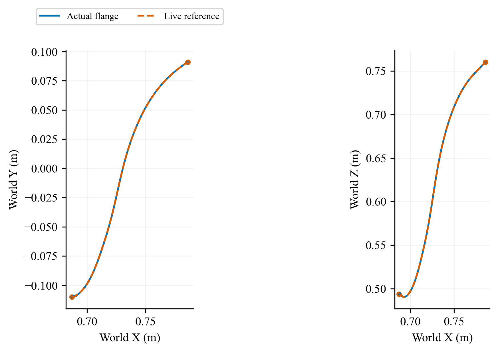
World XY/XZ paths of the actual flange and the recorded observer-evaluated approach reference, only while the approach reference is applicable. Equal spatial scales. S03 run P03; PREDICTION_REJECTED; actual interval 0.000–6.440 s; latch none; final window NOT_EVALUATED (full post-capture horizon absent). All recorded attempts are retained. Noisy capture compatibility is not established.
矢量PDF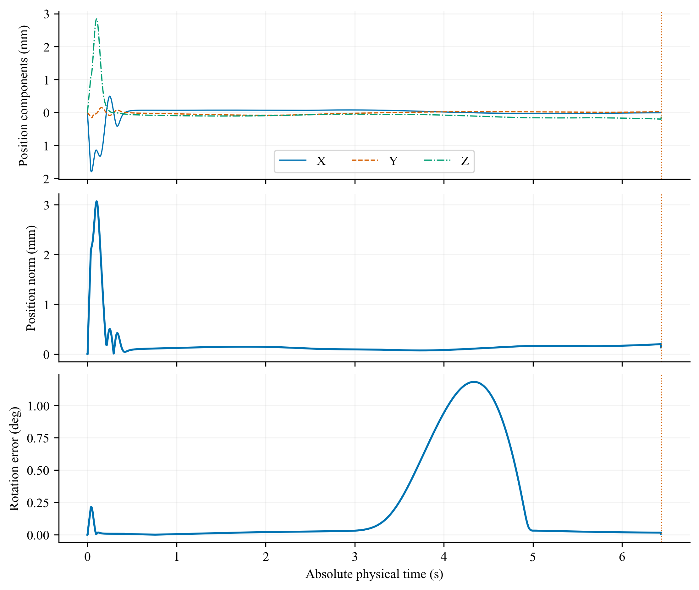
Actual flange minus the recorded observer-evaluated approach reference during approach: world position components, position norm, and SO(3) rotation error. No inactive post-latch reference is extended. This observer-sampled reference is not a freshly issued HQP task command at every servo tick. S03 run P03; PREDICTION_REJECTED; actual interval 0.000–6.440 s; latch none; final window NOT_EVALUATED (full post-capture horizon absent). All recorded attempts are retained. Noisy capture compatibility is not established.
矢量PDF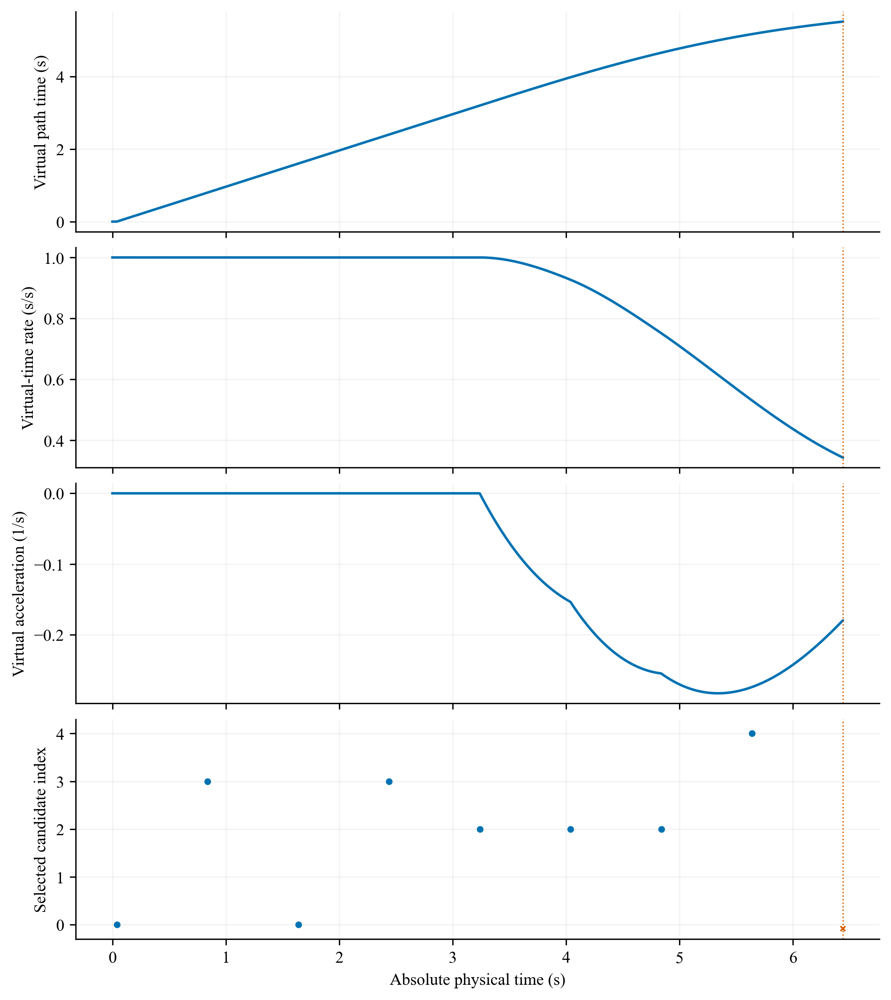
Normalized progress is u/8. Virtual-time derivatives and accepted local candidate index are shown; red crosses mean no accepted action. S03 run P03; PREDICTION_REJECTED; actual interval 0.000–6.440 s; latch none; final window NOT_EVALUATED (full post-capture horizon absent). All recorded attempts are retained. Noisy capture compatibility is not established.
矢量PDF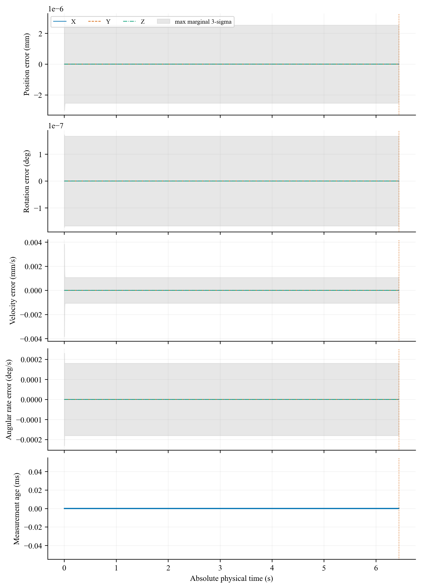
Initialization ticks without a valid estimate and stale terminal estimates are excluded here; Geometric-origin estimation errors at valid estimator-output ticks. Shading is the maximum of three marginal 3-sigma values, not joint coverage or a safety certificate. S03 run P03; PREDICTION_REJECTED; actual interval 0.000–6.440 s; latch none; final window NOT_EVALUATED (full post-capture horizon absent). All recorded attempts are retained. Noisy capture compatibility is not established.
矢量PDF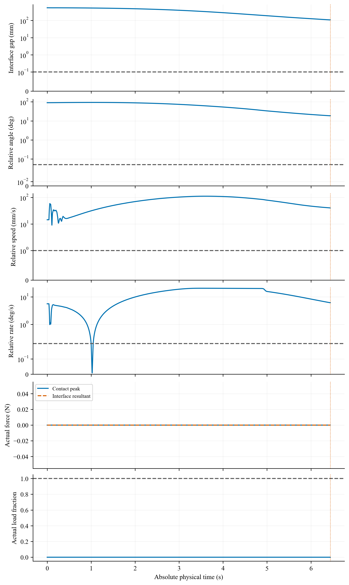
Independent physical capture quantities and actual load. Dashed pose lines denote capture gates; dotted post-latch lines denote holding gates. Values are not corrected by subtracting numerical residuals. S03 run P03; PREDICTION_REJECTED; actual interval 0.000–6.440 s; latch none; final window NOT_EVALUATED (full post-capture horizon absent). All recorded attempts are retained. Noisy capture compatibility is not established.
矢量PDF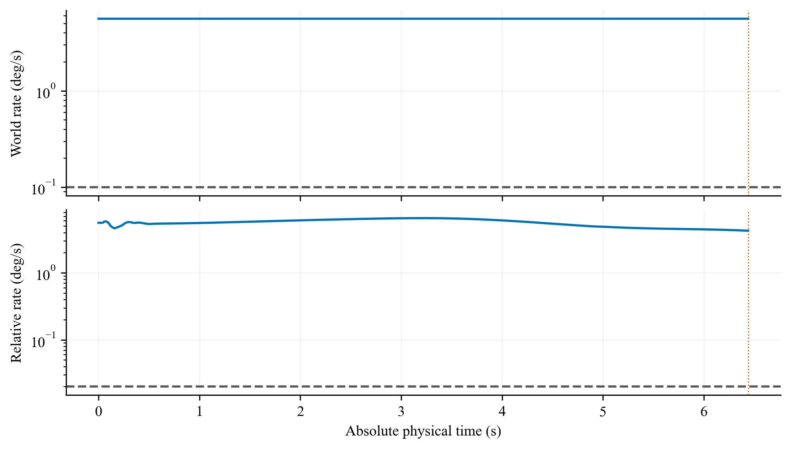
Target world and target-base relative angular-speed norms. The fixed final two-second window is shaded only for completed full-horizon runs. S03 run P03; PREDICTION_REJECTED; actual interval 0.000–6.440 s; latch none; final window NOT_EVALUATED (full post-capture horizon absent). All recorded attempts are retained. Noisy capture compatibility is not established.
矢量PDF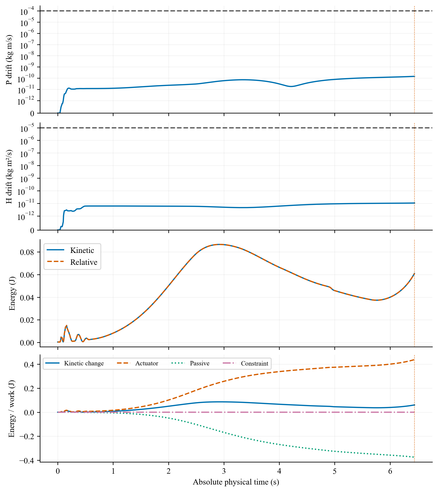
Separate linear/angular momentum drift, kinetic/relative energy and integrated work. Momentum and actual safety quantities retain their original SI definitions. S03 run P03; PREDICTION_REJECTED; actual interval 0.000–6.440 s; latch none; final window NOT_EVALUATED (full post-capture horizon absent). All recorded attempts are retained. Noisy capture compatibility is not established.
矢量PDF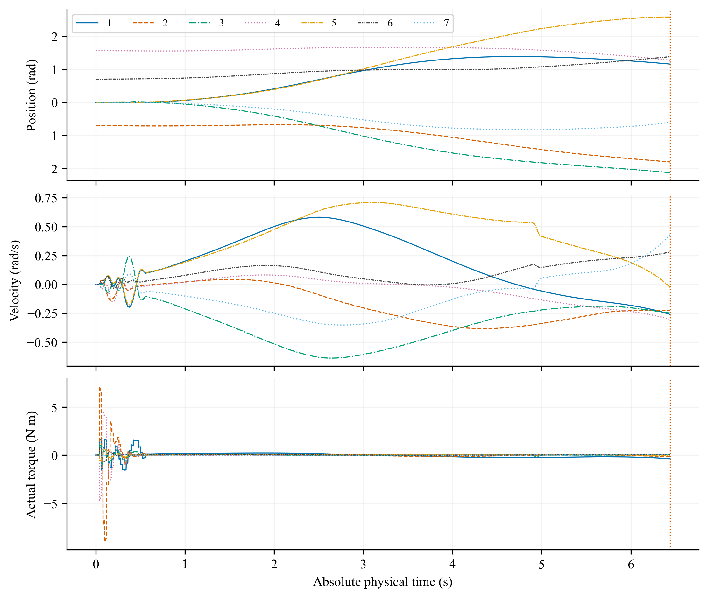
All seven joint positions, velocities and actual actuator forces from the saved physical trajectory. Line style and color identify each joint. S03 run P03; PREDICTION_REJECTED; actual interval 0.000–6.440 s; latch none; final window NOT_EVALUATED (full post-capture horizon absent). All recorded attempts are retained. Noisy capture compatibility is not established.
矢量PDF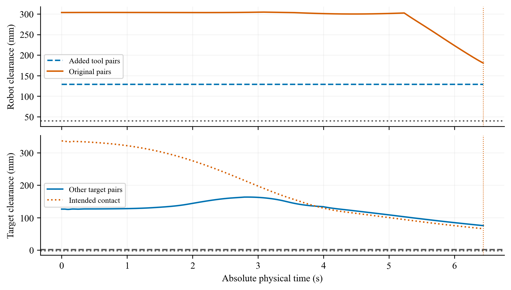
Original and added robot-clearance pairs, other target pairs and intended interface contact are shown with their separate original thresholds. S03 run P03; PREDICTION_REJECTED; actual interval 0.000–6.440 s; latch none; final window NOT_EVALUATED (full post-capture horizon absent). All recorded attempts are retained. Noisy capture compatibility is not established.
矢量PDF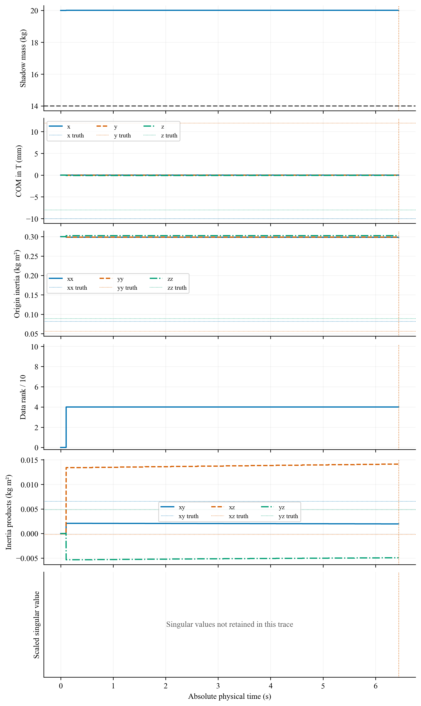
Saved shadow parameter and rank diagnostics; singular-value series was not persisted in the source trace and its panel is explicitly unavailable; evaluation-only truth is dashed in the matching component color. Parameter feedback remains disabled. Numerical rank is not parameter accuracy or control benefit. S03 run P03; PREDICTION_REJECTED; actual interval 0.000–6.440 s; latch none; final window NOT_EVALUATED (full post-capture horizon absent). All recorded attempts are retained. Noisy capture compatibility is not established.
矢量PDF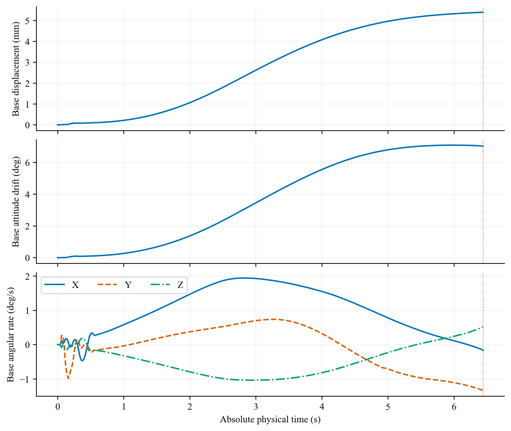
Passive-base translation and geodesic attitude change relative to its initial pose, followed by world angular-velocity components. No base actuator is introduced. S03 run P03; PREDICTION_REJECTED; actual interval 0.000–6.440 s; latch none; final window NOT_EVALUATED (full post-capture horizon absent). All recorded attempts are retained. Noisy capture compatibility is not established.
矢量PDF